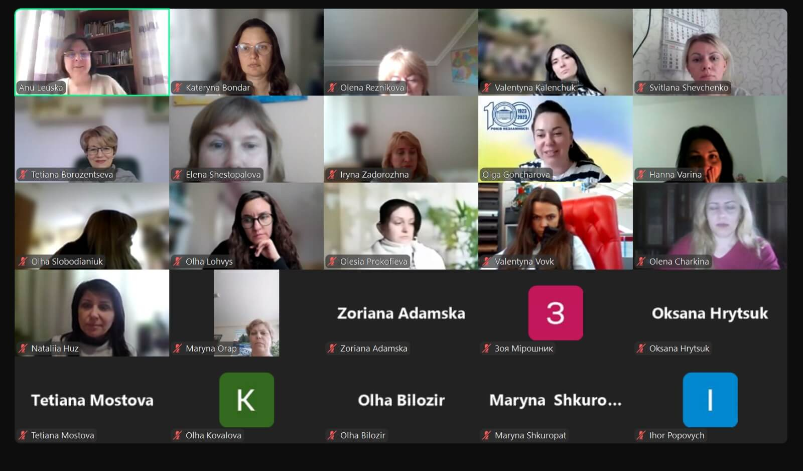
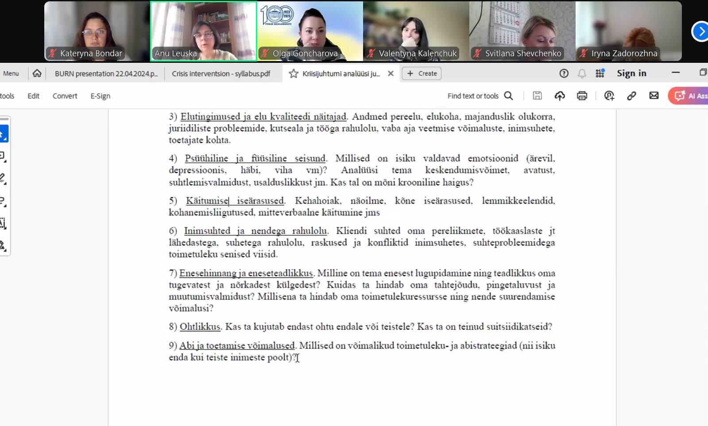
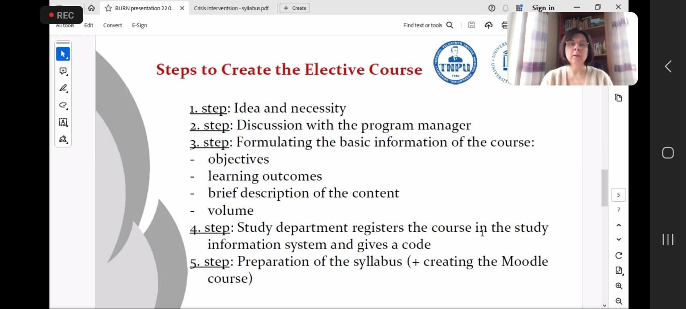

Webinar 1 "Estonian experience in syllabus development" at University of Tartu (April 22, 2024)
On April 22, 2024, a webinar entitled "Estonian experience in syllabus development," led by Anu Leuska from University of Tartu, delved into the intricacies of crafting curricula tailored specifically for the needs of educators in schools and social workers. The focal point was the creation of an elective course titled "Introduction to crisis intervention." Leuska's presentation shed light on the meticulous procedures involved in structuring and populating these courses to ensure educators are adequately prepared to handle crises cases with children (grief, bulling, suisidal behaviour) in educational settings.
A notable highlight was the delineation of a standardized process of sylabus development comprising five key steps: firstly, conceptualizing the course and assessing its contemporary relevance; followed by discussions with program guarantors; then, the formulation of clear objectives, tasks, and a succinct course description; encoding the course for seamless integration into the Moodle platform; and finally, the meticulous preparation of syllabi and course materials for Moodle.
The webinar attracted participation from teams representing all partner universities, fostering rich discussions on effective communication strategies within the courses and the optimal balance between in-person and online learning formats throughout the 16-week course duration. Attendees also raised queries regarding the formulation of course tasks, including the integration of case studies and assessment methods, and the utilization of various integrated tools to enhance learning outcomes.
Of particular significance was the emphasis on a course designed for teachers and social workers, focusing on managing crises involving children. Assessment for this course was structured to heavily weigh seminar attendance (75%) alongside independent work (25%). Additional topics of discussion included tracking student engagement with the course, employing task analytics for monitoring learning progress, quantitatively evaluating communication effectiveness, and providing comprehensive course overviews.